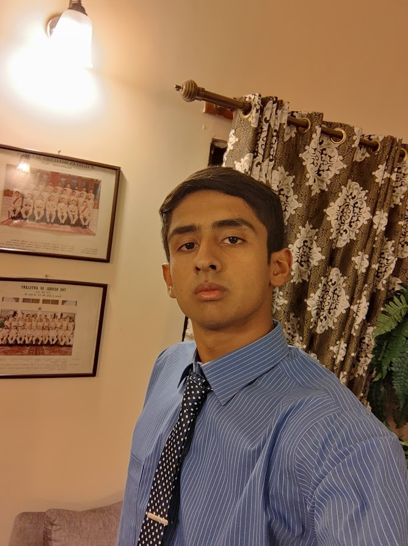

Ahtisham Ahmed
Computer Science
CONTACT
My Skills
- C
- C++
- C#
- JS
- SQL
- HTML
- CSS
- React
Profile
Enthusiastic and motivated Computer Science student with a passion for solving complex problems and a strong foundation in programming, algorithms, and software development. Eager to apply my knowledge and skills to contribute to innovative projects and gain real-world experience in the field of computer science. Committed to continuous learning and self-improvement to stay at the forefront of technology trends.
Experience
Internship at Ciklum
Gained expertise in javascript and development of web application using React framework.
Internship at InnoTech
Gained expertise in the process of devops using kubernetes, jenkins, docker, prometheus and grafana/